Spell User Master
Spell User Master
 Sorcerer
SorcererSorcerer set
Lv 45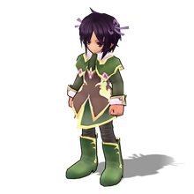

Other options
- Alt hair accessory
How to get
- All pieces from Fallen Titania, a reward of the Lv 45 Armor Quest
Expert job · Spell User
A job with strong support spells and neutral magic stronger than the Wizard's, at a higher MP cost.
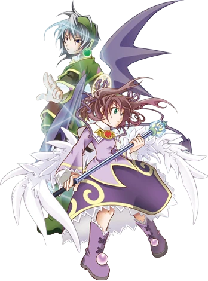
Requirement: MAG 30 or higher and Job Level 30 or higher as a Wizard.
Talk to the Spell User Master. The master sends you to the Sorcerer in Northern Promenade.
Travel to Northern Promenade.
Enter the Spell User Guild Headquarters' Lobby, then go to the Sorcerer Master Room.
Talk to the Sorcerer. He asks you to bring five items.
Collect 1 of each item. All five drop from monsters.
 Iron StomachPassive · Max Lv 5
Iron StomachPassive · Max Lv 5| Lv | Food recovery bonus | Food use time reduction |
|---|---|---|
| 1 | +15% | 15% |
| 2 | +20% | 20% |
| 3 | +25% | 25% |
| 4 | +30% | 30% |
| 5 | +35% | 35% |
| Lv | MP | Cast time | Cooldown | Duration |
|---|---|---|---|---|
| 1 | 10 | 0.5 sec | 3 sec | 10 min |
| 2 | 20 | 0.5 sec | 3 sec | 15 min |
| 3 | 30 | 0.5 sec | 3 sec | 20 min |
| 4 | 40 | 0.5 sec | 3 sec | 25 min |
| 5 | 50 | 0.5 sec | 3 sec | 30 min |
Restores HP with fixed Holy healing.
| Lv | SP | Cast time | Cooldown | HP recovery |
|---|---|---|---|---|
| 1 | 11 | 0 sec | 0 sec | 25 |
| 2 | 24 | 0 sec | 0 sec | 50 |
| 3 | 38 | 0 sec | 0 sec | 75 |
| 4 | 53 | 0 sec | 0 sec | 100 |
| 5 | 69 | 0 sec | 0 sec | 125 |
| Lv | MP | Cast time | Cooldown | Duration |
|---|---|---|---|---|
| 1 | 40 | 6 sec | 2.5 sec | 30 sec |
| Lv | MP | Cast time | Cooldown | Blocks | Duration |
|---|---|---|---|---|---|
| 1 | 20 | 0 sec | 2 sec | 5 hits | 8 sec |
| 2 | 24 | 0 sec | 2 sec | 5 hits | 10 sec |
| 3 | 28 | 0 sec | 2 sec | 6 hits | 12 sec |
| 4 | 32 | 0 sec | 2 sec | 6 hits | 14 sec |
| 5 | 36 | 0 sec | 2 sec | 7 hits | 16 sec |
| Lv | Cast time | Cooldown | Special drop bonus | Duration |
|---|---|---|---|---|
| 1 | 0 sec | 0.5 sec | +10% | 10 sec |
| 2 | 0 sec | 0.5 sec | +20% | 10 sec |
| 3 | 0 sec | 0.5 sec | +30% | 10 sec |
| Lv | MP | Cast time | Cooldown | Duration |
|---|---|---|---|---|
| 1 | 8 | 2 sec | 2 sec | 30 sec |
Opens the Staff Crafting synthesis interface for the selected skill level.
| Lv | SP | Cast time | Cooldown |
|---|---|---|---|
| 1 | 3 | 1 sec | 1 sec |
| 2 | 5 | 1 sec | 1 sec |
| 3 | 7 | 1 sec | 1 sec |
| 4 | 9 | 1 sec | 1 sec |
| 5 | 11 | 1 sec | 1 sec |
Removes magical walls placed on the ground.
| Lv | MP | Cast time | Cooldown |
|---|---|---|---|
| 1 | 15 | 3 sec | 0 sec |
| 2 | 15 | 2 sec | 0 sec |
| 3 | 15 | 1 sec | 0 sec |
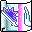
Energy BarrierActive party buff · Max Lv 5| Lv | MP | Cast time | Cooldown | Buff duration |
|---|---|---|---|---|
| 1 | 28 | 3 sec | 1 sec | 180 sec |
| 2 | 33 | 3 sec | 1 sec | 300 sec |
| 3 | 39 | 3 sec | 1 sec | 420 sec |
| 4 | 45 | 3 sec | 1 sec | 540 sec |
| 5 | 50 | 3 sec | 1 sec | 660 sec |
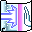
Magic BarrierActive party buff · Max Lv 5| Lv | MP | Cast time | Cooldown | Buff duration |
|---|---|---|---|---|
| 1 | 28 | 3 sec | 1 sec | 180 sec |
| 2 | 33 | 3 sec | 1 sec | 300 sec |
| 3 | 39 | 3 sec | 1 sec | 420 sec |
| 4 | 45 | 3 sec | 1 sec | 540 sec |
| 5 | 50 | 3 sec | 1 sec | 660 sec |
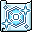
HexagramActive ground field · Max Lv 5| Lv | MP | Cast time | Cooldown | Duration |
|---|---|---|---|---|
| 1 | 18 | 2.8 sec | 2.8 sec | 10 sec |
| 2 | 26 | 2.8 sec | 2.8 sec | 15 sec |
| 3 | 34 | 2.8 sec | 2.8 sec | 20 sec |
| 4 | 42 | 2.8 sec | 2.8 sec | 25 sec |
| 5 | 50 | 2.8 sec | 2.8 sec | 30 sec |
Sorcerer SpiritPassive · Max Lv 1| Possession slot | Main bonuses |
|---|---|
| Right hand | ATK/MATK +14%, S.HIT/L.HIT +14%, Max HP/MP/SP +5% |
| Left hand | ATK/MATK +7%, S.HIT/L.HIT +6%, DEF/M.DEF +14%, Max HP/MP/SP +7.5% |
| Accessory | ATK/MATK +8%, S.HIT/L.HIT +9%, S.AVOID +14%, Max HP/MP/SP +7.5% |
| Armor | ATK/MATK +5%, DEF/M.DEF +7.5%, Max HP/MP/SP +14% |
| Lv | MP | Cast time | Cooldown | Duration | Player debuff | Monster debuff |
|---|---|---|---|---|---|---|
| 1 | 12 | 1 sec | 1 sec | 15 sec | MAG -6, INT -6, DEX -8 | MATK -14%, M.DEF -14% |
| 2 | 14 | 1 sec | 1 sec | 20 sec | MAG -7, INT -7, DEX -10 | MATK -18%, M.DEF -18% |
| 3 | 16 | 1 sec | 1 sec | 25 sec | MAG -9, INT -9, DEX -12 | MATK -22%, M.DEF -22% |
| 4 | 18 | 1 sec | 1 sec | 30 sec | MAG -11, INT -11, DEX -14 | MATK -26%, M.DEF -26% |
| 5 | 20 | 1 sec | 1 sec | 35 sec | MAG -12, INT -12, DEX -16 | MATK -30%, M.DEF -30% |
| Lv | MP | Cast time | Cooldown | Duration | Player debuff | Monster debuff |
|---|---|---|---|---|---|---|
| 1 | 12 | 1 sec | 1 sec | 15 sec | VIT -6, STR -5, AGI -9 | ATK/S.HIT -14%, DEF -14% |
| 2 | 14 | 1 sec | 1 sec | 20 sec | VIT -7, STR -6, AGI -12 | ATK/S.HIT -18%, DEF -18% |
| 3 | 16 | 1 sec | 1 sec | 25 sec | VIT -9, STR -7, AGI -14 | ATK/S.HIT -22%, DEF -22% |
| 4 | 18 | 1 sec | 1 sec | 30 sec | VIT -11, STR -8, AGI -16 | ATK/S.HIT -26%, DEF -26% |
| 5 | 20 | 1 sec | 1 sec | 35 sec | VIT -12, STR -10, AGI -18 | ATK/S.HIT -30%, DEF -30% |
Reduces the target's skill delay for 60 seconds.
| Lv | MP | Cast time | Cooldown | Delay reduction | Duration |
|---|---|---|---|---|---|
| 1 | 24 | 1 sec | 0.8 sec | 15% | 60 sec |
| 2 | 27 | 1 sec | 0.8 sec | 20% | 60 sec |
| 3 | 30 | 1 sec | 0.8 sec | 25% | 60 sec |
| 4 | 33 | 1 sec | 0.8 sec | 30% | 60 sec |
| 5 | 36 | 1 sec | 0.8 sec | 35% | 60 sec |
 Spell CancelActive skill · Max Lv 1
Spell CancelActive skill · Max Lv 1Allows currently casting magic skills to be cancelled.
| Lv | SP | Cast time | Cooldown |
|---|---|---|---|
| 1 | 5 | 0 sec | 0.5 sec |
| Lv | MP | Cast time | Cooldown |
|---|---|---|---|
| 1 | 20 | 0 sec | 0.5 sec |
| 2 | 22 | 0 sec | 0.5 sec |
| 3 | 24 | 0 sec | 0.5 sec |
| 4 | 26 | 0 sec | 0.5 sec |
| 5 | 28 | 0 sec | 0.5 sec |
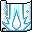
Energy BombActive magic attack · Max Lv 3| Lv | MP | Cast time | Cooldown | First hit | Delayed explosion |
|---|---|---|---|---|---|
| 1 | 35 | 2.5 sec | 2 sec | 350% | 300% |
| 2 | 45 | 3 sec | 2 sec | 440% | 300% |
| 3 | 55 | 3.5 sec | 2 sec | 530% | 300% |
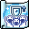
Divine BarrierActive party buff · Max Lv 5| Lv | MP | Cast time | Cooldown | DEF | Additive DEF | M.DEF | Additive M.DEF | Duration |
|---|---|---|---|---|---|---|---|---|
| 1 | 32 | 3.5 sec | 1 sec | +5% | +5 | +5% | +10 | 125 sec |
| 2 | 39 | 3.5 sec | 1 sec | +7% | +10 | +7% | +15 | 140 sec |
| 3 | 46 | 3.5 sec | 1 sec | +9% | +10 | +12% | +15 | 155 sec |
| 4 | 53 | 3.5 sec | 1 sec | +11% | +15 | +15% | +20 | 170 sec |
| 5 | 60 | 3.5 sec | 1 sec | +15% | +20 | +25% | +20 | 185 sec |
Deals Neutral magical damage to one target, but calculates the target's defense using DEF instead of M.DEF.
| Lv | MP | Cast time | Cooldown | Damage rate |
|---|---|---|---|---|
| 1 | 48 | 4 sec | 1 sec | 550% |
| 2 | 62 | 6 sec | 1 sec | 750% |
| 3 | 76 | 8 sec | 1 sec | 950% |


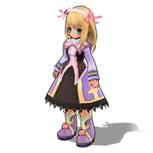
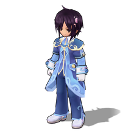

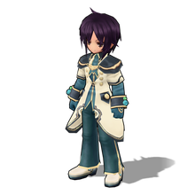
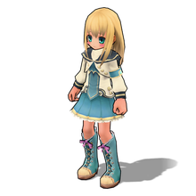